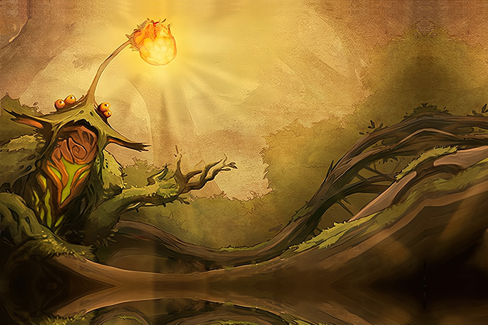

Lure of the Deep Wilderness
Most early Dahan settlements clustered along the coasts. From time to time, a handful of residents would get a distant look in their eyes and stride off into the heart of the island, no pleading or reason dissuading them from seeking some distant call only they could hear.
Many of these involuntary wanderers survived and settles together in time. This may have hastened the First Reckoning, as they relied much more on agriculture than did their fishing bretheren along the coast.
A few wanderers spoke of finding the Spirit which called them ever-further inward, in voices of wonder mingled with fear. But most never even saw
it, only felt its distant beckoning.
SETUP:
Put 3 {presence} on your starting board: 2 in land #8, and 1 in land #7. Add 1 {beasts} to land #8.
Play Style:
Very focused on the interior - its best options for coastal lands are "draw the Invaders inland" or "turn {town}/{city} into {explorer}, then draw them inland". Likes the interior to be dangerous, full of {badlands}, {beasts}, {disease} and {wilds}, ideally where its {presence} is.
Has better-than-average potential for containing Invaders and setting up a zone safe from Explorers, but the coasts may get messy while doing so.
COMPLEXITY
Moderate
|
Summary of Powers
|
|
|
|
|
|
|
OFFENSE
|
CONTROL
|
FEAR
|
DEFENSE
|
UTILITY
|